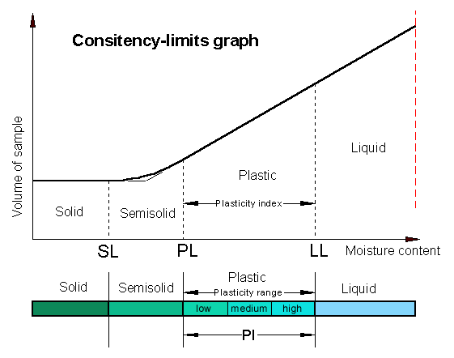
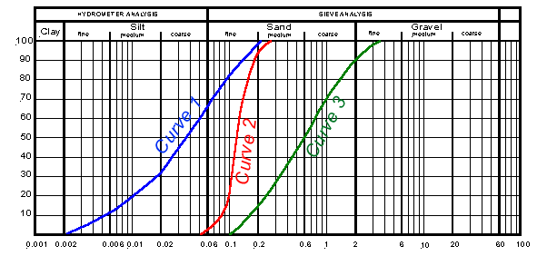

Plastic & Gravel Soils
Fine-grained
cohesive & Coarse-grained non-cohesive Soils
Consistency limits
Liquid limit (LL) is when the soil represents a near liquid state.
This occurs at very high water contents when the soil behaves as a viscous
liquid in that it flows and will not hold a specific shape. In other words
the soil will flow under its own weight.
Plastic limit (PL) is the lowest water content at which the soil
exhibits plastic behavior. It is the minimum moisture content at which the
soil can be rolled into a thread of 3mm diameter without breaking up.
Shrinkage limit (SL) is the water content at which there is no
more volume change in the soil due to reduction in water. In other words
the maximum moisture content at which further loss of moisture does not
cause a decrease in the volume of the soil.
Plasticity index (PI) is the range of moisture content in which
the soil is plastic; the finer the soil the greater is the plasticity
index.
Plasticity index = liquid limit - plastic
limit
PI = LL - PL
Figure 5 shows the different stages of a plastic soil and the volume
changes due to moisture content.

Figure 5
]
Particle size distribution
|
Table 1
Particle size limits
|
|
Type
|
Range of particle size
in millimeter
|
|
Cobbles
Coarse gravel
Medium gravel
Fine gravel
Coarse sand
Medium sand
Fine sand
Coarse silt
Medium silt
Fine silt
Clay
|
200 - 60
60 -20
20 - 6
6 - 2
2 - 0.6
0.6 - 0.2
0.2 - 0.06
0.06 - 0.02
0.02 - 0.006
0.006 - 0.002
Less than 0.002
|
|
Soils usually are classified according to their
grain size. We have coarse-grained non-cohesive and fine-grained
cohesive and organic soils. The grain of the various soils are
all different. Table 1 below shows the range of particle sizes.
The distribution of the particles is determined
by sieving. The chart shown in Figure 1 is used for the sieve
analysis. The percentage of a sample greater than a given size
is determined for coarse soils. For fine soils the particle sizes
are meaningless. The distinction between silt and clay is made
not on the basis of an arbitrary size distinction but on their
behaviour in the present of water. The consistency of fine soil
varies with the amount of water present.
|
|
In the graph shown in Figure 6,
Curve 1 presents a well graded
silty sand (high percentage of silt fraction),
Curve 2 a uniform fine sand
(with a high percentage of equal grain sizes), and
Curve 3 a well graded sand.

Figure 6
|
|